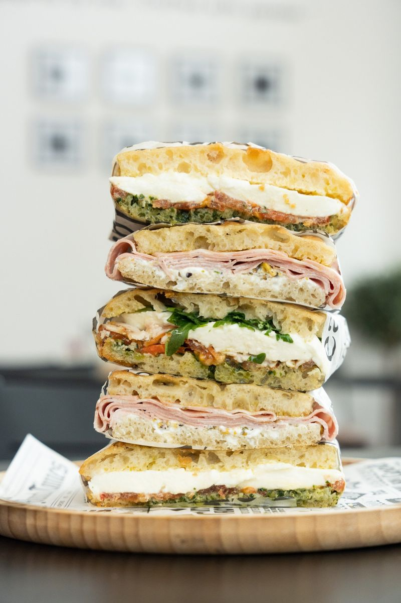
Lunch
Broodjes op onze eigen focaccia, tosti's op zuurdesem, salades en soep van de dag.
Vanaf 11.00 uurMeer info
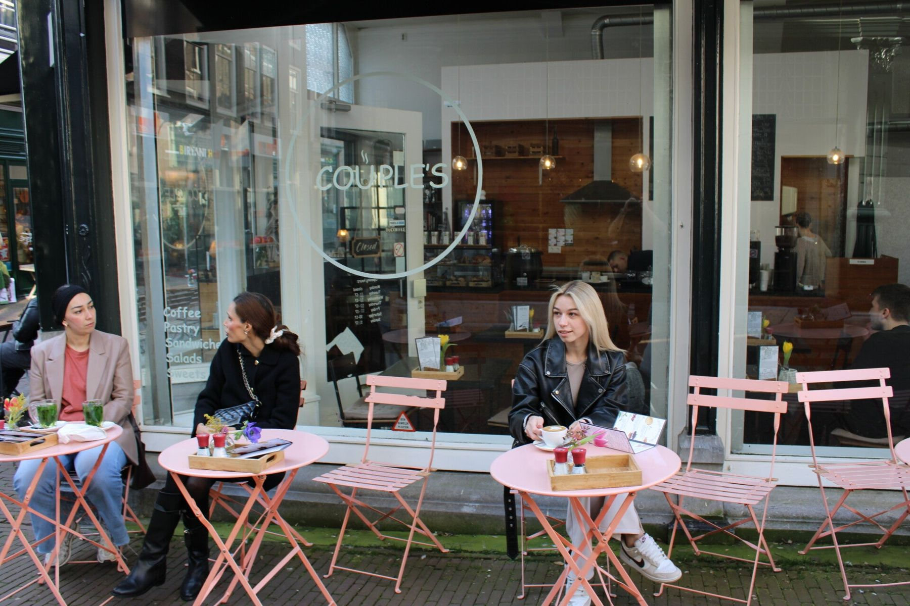
Lunchroom en familiebedrijf aan de Voorstraat in Dordrecht. Met biologische koffie en een verse lunch, en vrijwel alles maken we zelf.
Even koffie, uitgebreid lunchen, een sandwichbox op kantoor of je eigen event bij ons in de zaak.

Broodjes op onze eigen focaccia, tosti's op zuurdesem, salades en soep van de dag.
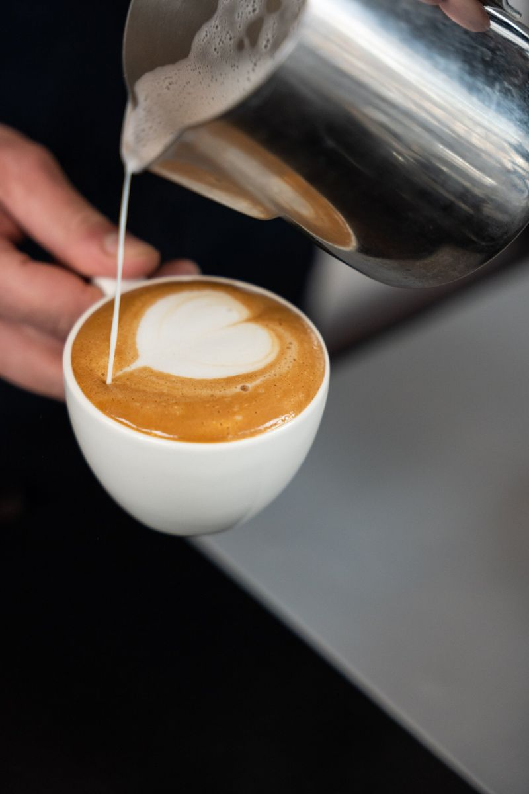
Biologische koffie, verse munt- en gemberthee, huisgemaakte ijsthee en matcha.
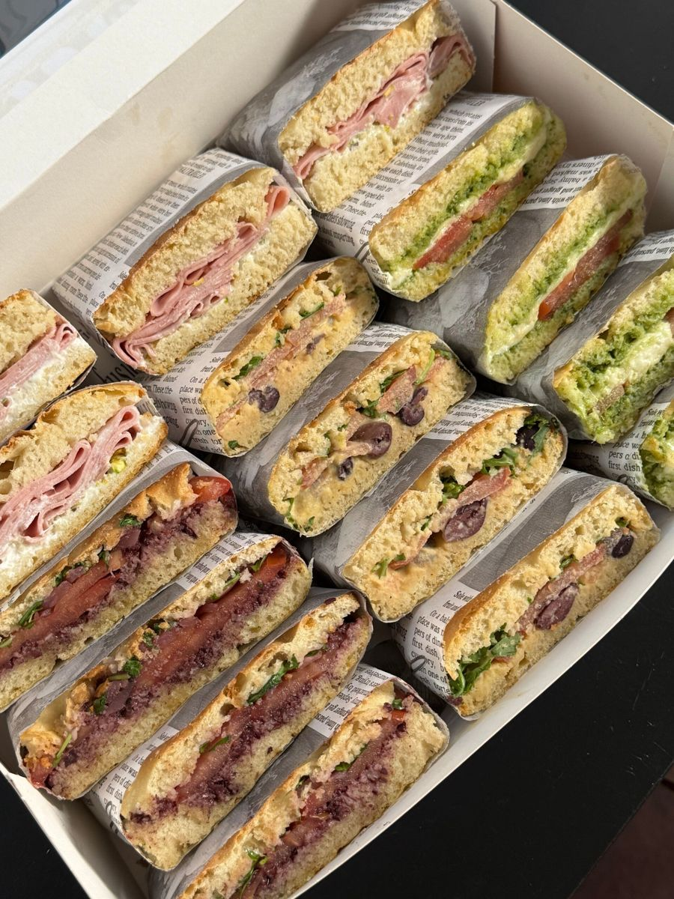
Sandwichboxen met huisgemaakte focaccia voor je vergadering, kantoorlunch of evenement.
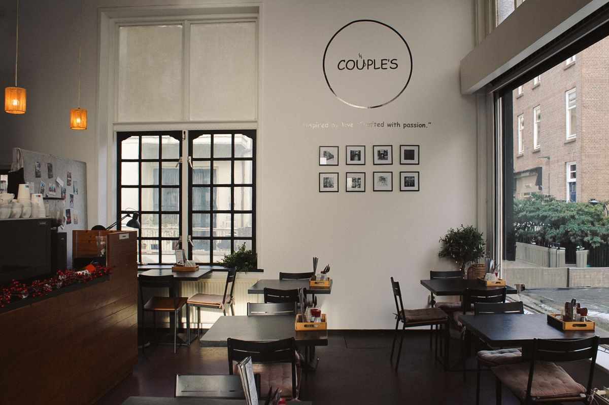
Een gezellige, gastvrije plek voor je eigen bijeenkomst, verjaardag of borrel.
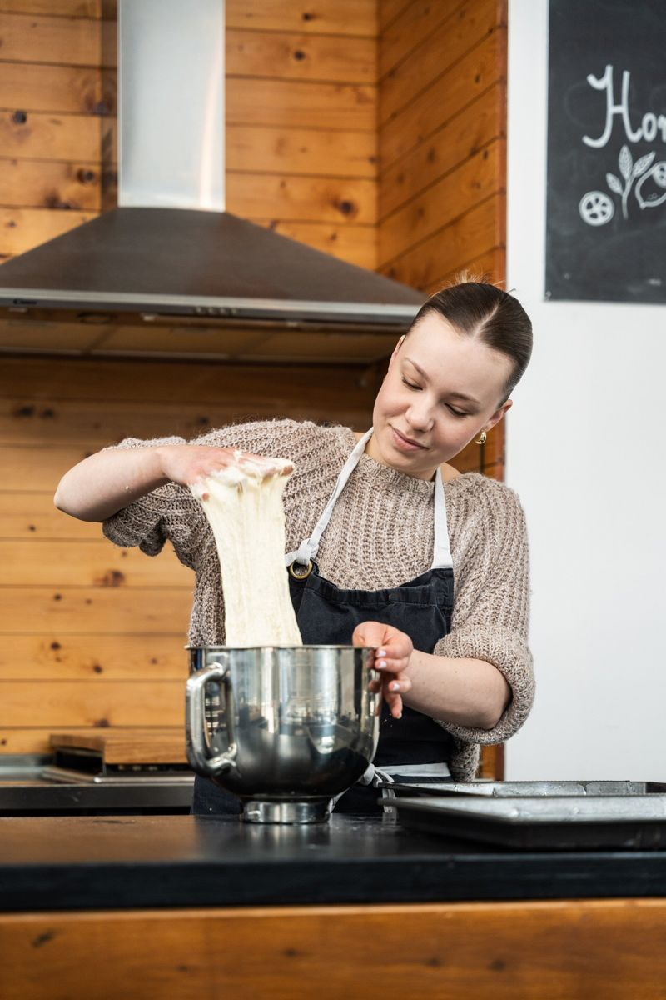
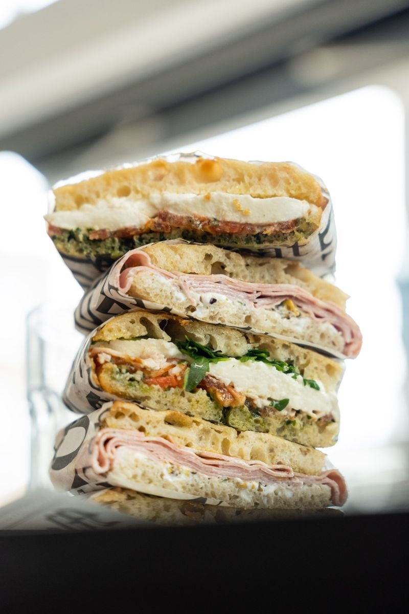
Kwaliteit en ambacht staan bij ons centraal. Onze focaccia bakken we elke dag vers, en ook het broodbeleg, de pesto, de hummus en een groot deel van het gebak maken we zelf.
We werken met zoveel mogelijk biologische ingrediënten. Zo proef je pure smaken en krijg je een eerlijke, verse lunch.
"Bread baked with love is called focaccia."
Op de hoek bij de Grote Kerk, met een terras aan de Voorstraat.
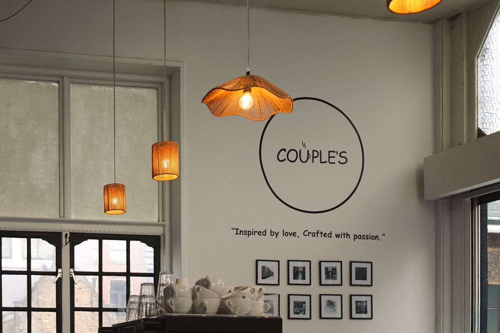
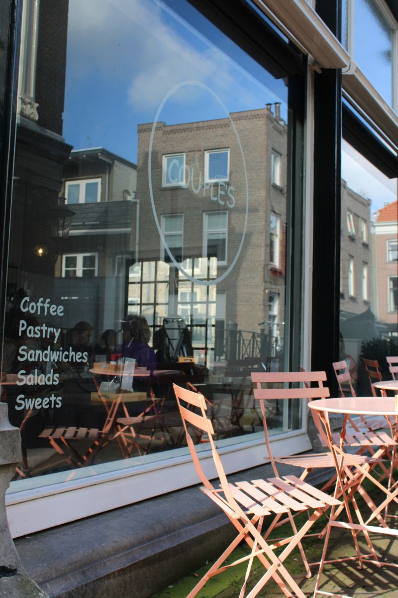
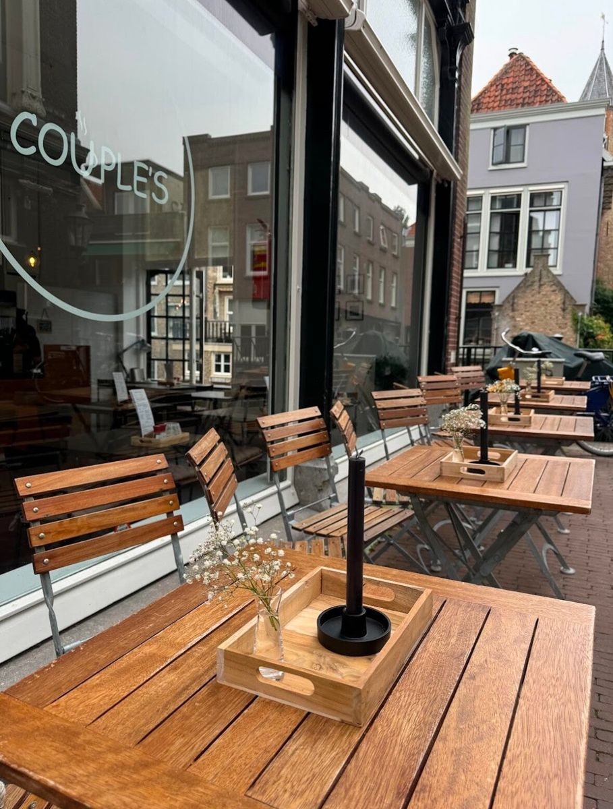
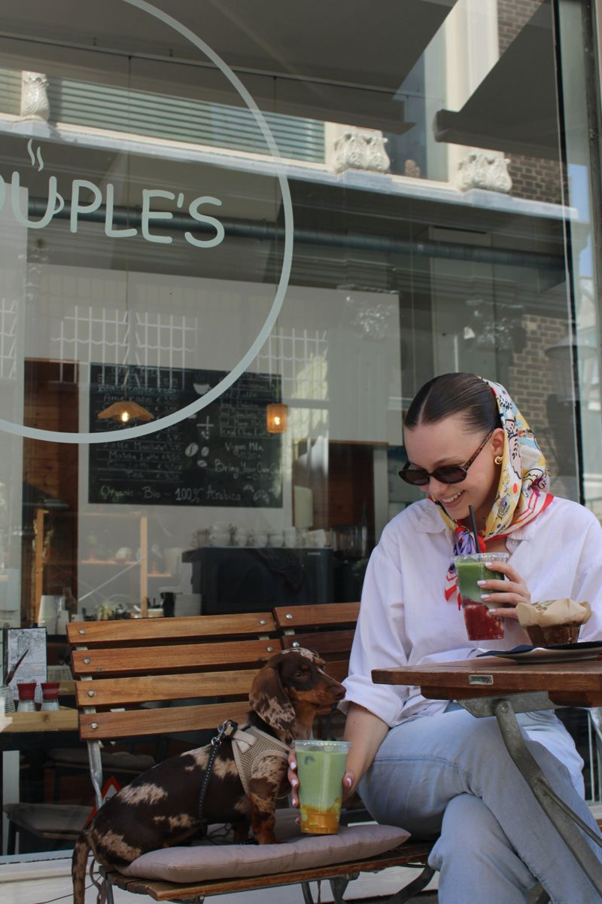
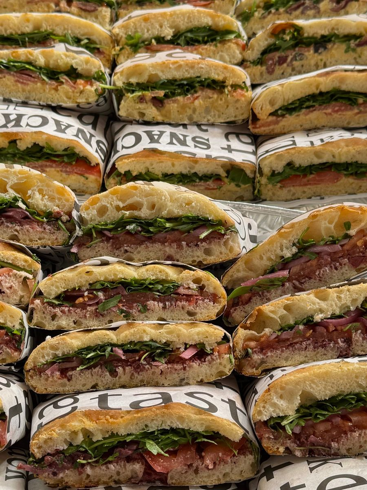
Voor een vergadering, kantoorlunch of evenement maken we sandwichboxen met onze huisgemaakte focaccia. Belegd met de beste en meest verse producten, en met spreads die we zelf maken.
Wil je er desserts of drankjes bij? Dat kan ook. We bezorgen in de regio Rotterdam, Dordrecht en Breda met onze 100% elektrische bezorgauto.
Alles over catering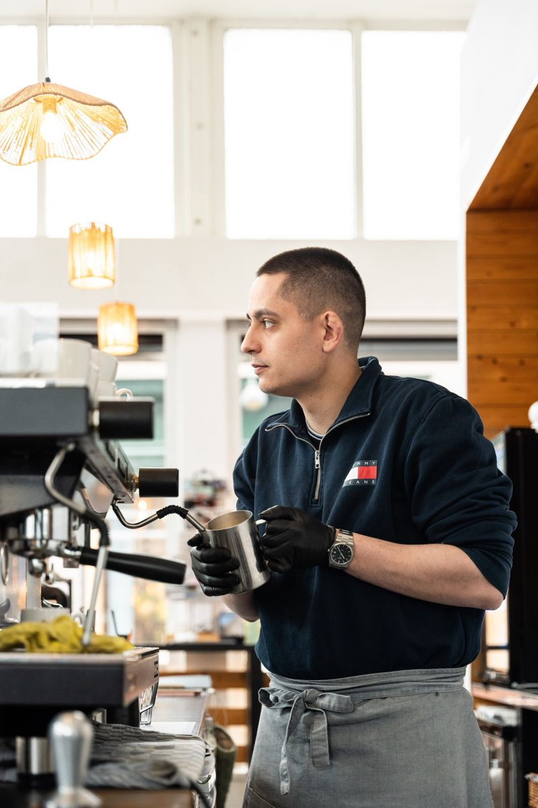
"Inspired by love, crafted with passion."
Couple's is een familiebedrijf, opgericht in augustus 2024. Op de hoek bij de Grote Kerk bieden we een warme en gastvrije plek waar je even kunt ontspannen en genieten.
We willen zo duurzaam mogelijk werken: met bewust koken, recyclen en verantwoorde keuzes werken we naar zero food waste en zero waste.
Reserveer een tafel of stel je vraag. Stuur een WhatsApp-bericht of bel ons, dan bevestigen we je reservering zo snel mogelijk.
Lunchroom aan de Voorstraat, bij de Grote Kerk